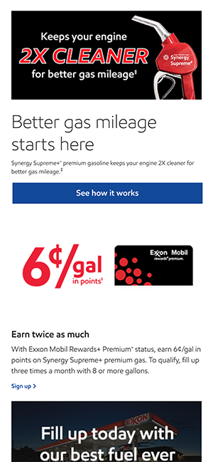
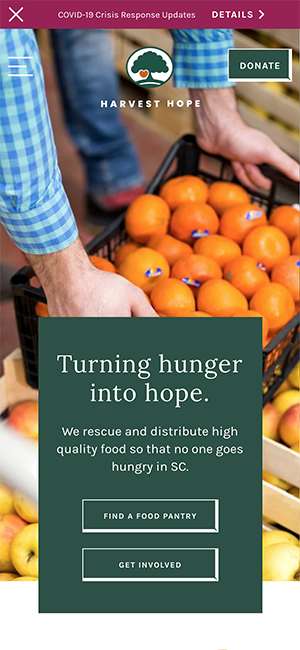
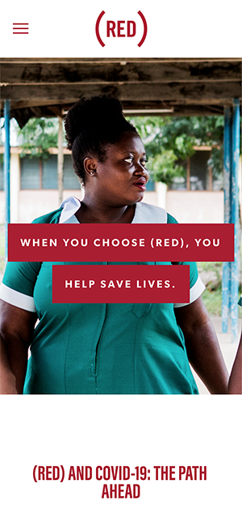

White Space
Exxon Mobile Company
www.exxon.com
Exxon uses white space around all elements in order to keep their website clean and easy to use. The use of margin and whitespace provides visual clarity between each element.
Fitt's Law
Harvest Hope Food Bank
www.harvesthope.org
Fitt's Law is well illustrated by the placement of the donate button directly aligned to the right of the centered logo and header of the company. The donate button is the second element you see when you open the page.It's easy to find and easy to use.
Repetition
Red
www.red.org
Red.org uses the appropriate principle of repetition of the color red throughout their website. All accent elements are in redbox and fonts are either in red or white with a red background.